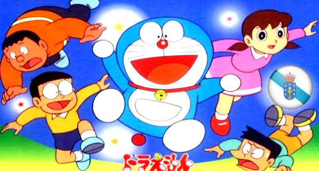

España envia a cancion de Doraemon en galego ao proximo Eurovision 2018
01/02/2017 12:00

Este año como representante de España tendremos la canción original de Doraemon en galego, otros de los finalistas fueron la banda sonora del Xavarín Club y hits de Heredeiros da Crus como Pastor Aleman y A Cruadrilla de Pepa a Loba